找碴的小蜜蜂
趕路的卡車司機，一直到凌晨都有人入住在這間星星旅館，本來空曠的內院，半夜爬起來看星星的時候已經停滿了各式大卡車。
真感謝老闆沒有找其他司機跟我擠一間房，因為司機們都是在比賽誰打呼比較大聲的，讓我安穩的睡了一個好覺。
早上六點多準備要趁著天氣涼快出發，想在星星峽吃過早餐再走，但是除了我是醒著的，整個城市都還在睡眠當中。
店家都是關門的，也沒有人在賣早餐，要七點過後才會開始有人做生意，我不想枯等到七點，今天還有很長一段路要趕。
早上這一段風勢比較小的時間就是能不能趕完兩百公里路的關鍵，如果中午以前能夠騎上一百公里，
那下午就算風勢轉強，慢慢撐著騎的話，天黑前應該也可以到得了哈密，只是會累的像條狗就是了。
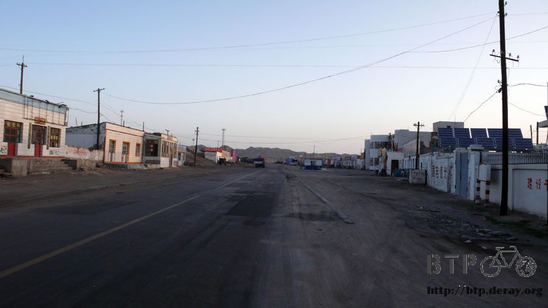
星星峽在睡覺，美味可口的早餐又沒有著落了，裝滿開水之後，告別了這個小地方，開始前進吧。
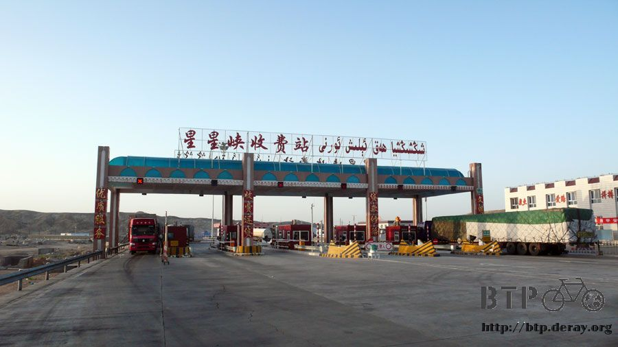
今天的『單車早餐』菜單是，三顆橘子、半包花生、幾把葡萄乾，將近中午的時候又吃了一根大熱狗，
配著數量不多的開水，再怎麼省著喝，如果路上沒有補給，要一路騎到哈密是不可能的，大概中午的時候就會喝光光。

從星星峽出發，在抵達哈密之前，只有一個叫做駱駝圈子的地方有吃喝住，其他都是一望無際的戈壁灘。
還沒出發的時候，我看著地圖，發現在這一段路一百五十公里的荒漠當中，出現兩個地名，苦水和煙敦。
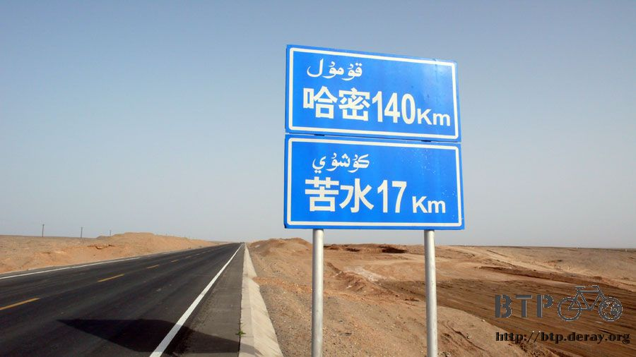
『既然有地名會標示在地圖上，那應該就表示這邊有人煙吧？』
這是當時我的想法，等實際騎經過這些地方，等著我的只是一個路牌，什麼都沒有，一樣的沙漠、一樣的乾渴、一樣的漫漫長路。
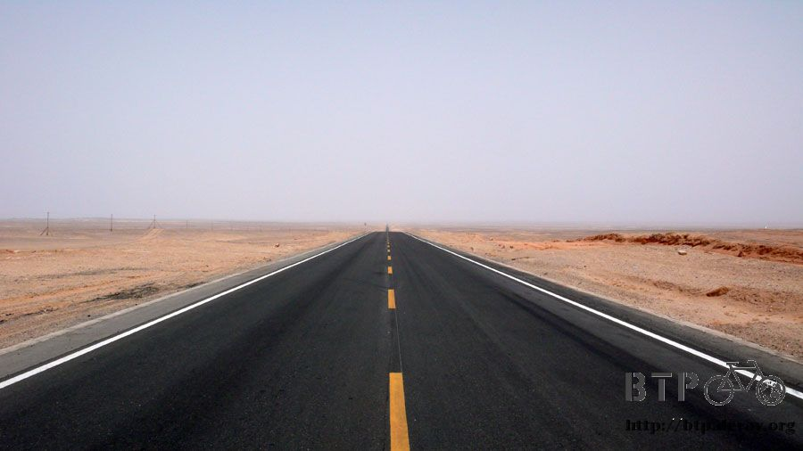
戈壁灘這個名字我很喜歡，聽起來就很充滿想像力，明明是沙漠為什麼要稱為『灘』呢？
看著高低起伏的沙漠，有時還能長著一些植物，有時則寸草不生，一片死寂。
我都把這片景色像想像成是古代浩瀚無邊的海洋，但是如今已經乾枯，所遺留下來給後人的只剩下它曾經美麗的名字。
當然這只是我的想像啦，這邊可能億萬年來都不曾是海。

我喜歡看著貧破的東西、荒蕪的景色，這樣可以幫助我思考，什麼東西是真正需要被重視的價值。
一路上看到很多中國人住的老舊房子，在大都會地區，這些房子連廢墟都稱不上，連棟狗屋都比它還豪華。
但是在這房子裡頭確實蘊含著生命的力量、親情的溫暖，人需要多好多舒適的房子，才能讓它像是一個『家』？
又或家的定義不在於房子的好壞，而是居住在房子裡面的人，所帶給這棟房子一個像家的感覺。
幸運的時候可以淋浴洗熱水澡，有時候在小地方則連個水龍頭都沒有，得拿著臉盆去水缸舀水擦身體。
人類所追求的生活的舒適程度，又是怎麼樣才叫做享受呢？
不斷提出和被滿足的物慾，只會造就更多物慾的需求，而鮮少有滿足的一天。
相反的，貧困的環境下，一點點稀鬆平常的生活物質，但卻顯得無比珍貴。
用手扭開水龍頭所得到的自來水，跟用手拿著勺子舀著水缸中不知從何取來的清水，那感受是截然不同的。
房子跟水，只是一些日常生活中的小感觸，我每天騎單車的時間平均都在十個小時以上，
用緩慢的速度騎過這片大地，讓我感觸最深的，就是這片大地的面貌，時而翠綠、時而荒蕪。
有時生意盎然、有時一片死寂，連大聲喊叫的聲音都被吞噬在空氣中那樣的死寂。
哪一種環境是人類所追求的？
這答案很明顯，只要有綠意的地方，就會有人跡，反之，當我騎乘在荒漠當中，幾百公里沒有看到一棟房子，是很稀鬆平常的事情。
我們能選擇自己住的房子要多高級、生活的享受要多舒適。
那我們是不是也能選擇自己所居住的地球可以更加的充滿生命力。

一個人的力量很小，但很多人集結起來的力量就不容忽視，人類既然有本事破壞地球的環境，那就拿出一點責任心來，讓它恢復原貌。
再這麼下去，將來不論住在多高級的房子裡，門一打開全是荒蕪的世界，水龍頭扭開流出來的只有沙子。
多美麗的海洋，都有可能只留下一個令人懷念的名字，但是放眼望去，全是像這樣的面貌，沒有任何生命能存活在其中。
趁我們還有機會做出選擇的時候，有能力做點改變的時候，一切都還不算晚，領悟永遠比後悔來的可貴。
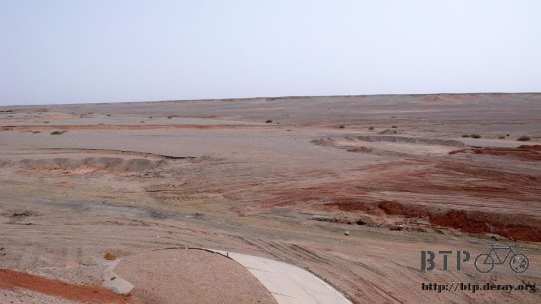
沿著312國道，是一條正在修建當中的高速公路，預定明年完工，從星星峽通往哈密的快速路線。
一路上看到很多在沙漠中辛苦修築的工人，先對我大聲吆喝一下，引起我的注意，然後跟我揮揮手，我也會和他們打招呼問好。
既然有工人，那勢必有工寮讓他們休息，期盼著自己能夠在像雙塔水庫那樣，遇到沙漠中的商店。

無奈這一路上什麼都沒有，風勢隨著氣溫的高漲，也逐漸增強。
在中午時分，只剩下半瓶水，這已經是相當省著喝的結果，好消息是，果真在中午的時候就騎了一百公里的路。
看來今天騎到哈密有望，只要我別渴死在沙漠中的話...
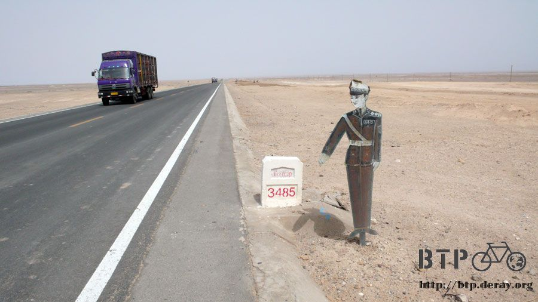
找了一間沙漠中的工寮騎著小多過去，要是什麼都沒有的話，我的損失也只是多騎這幾百公尺罷了。
進入工寮看到第一個人就問他這邊有沒有賣點喝的東西？
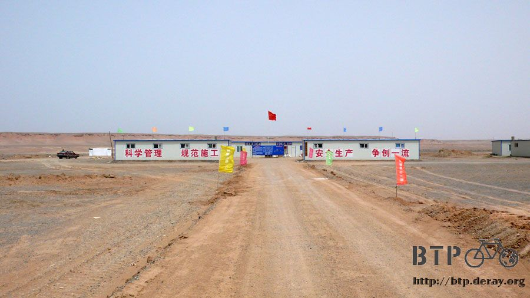
這一個我看到的第一個人，就是整個工程單位的領導，也就是這裡職位和權力最高的人~_~
他說這邊沒有賣東西，轉身進去房舍裡面，出來就遞給我一瓶綠茶。
『天熱，很渴吧。這個拿去喝。』

我的眼淚已經在眼眶打轉，被邀請到領導的辦公室坐著休息喝飲料，他正忙著監督各地來的工人良莠不一的施工品質。
在他繁忙的空閒之餘，又跟我補了一句話『等等留下來一起在食堂吃個飯吧。』

為什麼我總會幸運的遇到那麼多好人，不求回報的幫助一個遠方來的陌生人，換來的只是幾句謝謝。
我拿出三個空空的水瓶，趁領導不忙的時候，問他哪邊可以裝開水？
在工寮外面有一個大儲水槽，旁邊有一個不停加熱的小爐子，那個隨時扭開就是熱開水了。

大水槽的旁邊養著一隻大黑狗，一開始沒發現牠，後來看到的時候嚇一跳，還好牠不會咬人，只是看守著而已。
將三個水瓶都裝滿滾燙的開水，瓶子都變的軟趴趴的，放在陰涼處讓它變涼。
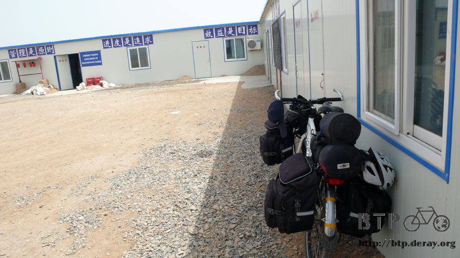
工人們早上八點起床，除了中午一點半到三點半是休息之外，其它時間都要工作，晚上一直到八點才下班吃晚餐。
中午開飯的時間是一點半，我就坐在辦公室裡先睡一會，迷迷糊糊的睡著，然後被領導的助理搖醒，說一起去吃飯吧。
食堂在工寮的後邊，工人們星期一到星期日都沒有假日，得不停工作，菜單則貼在牆壁上，
每個星期三和星期日會加菜吃大魚或是大肉，今天是星期一，午餐吃拉麵。

大家都自備筷子以及大碗公或是大便當盒，放在廚房外頭的桌上，就會被廚師拿進去裝麵淋上醬料。
自備的碗有多大，麵就裝的有多滿，但是我沒有帶餐具，就傻傻的坐在餐廳裡面等。
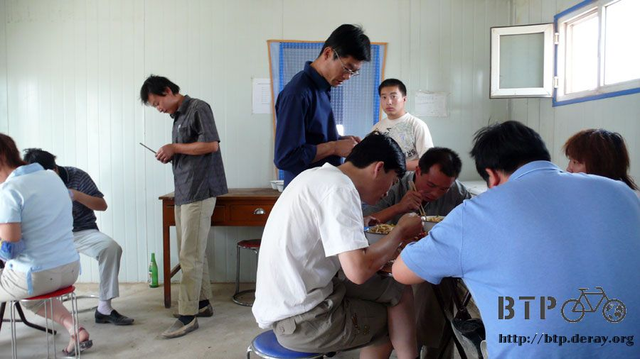
進到廚房裏頭，問廚師有沒有多的碗或是什麼的，也幫我煮一碗麵。
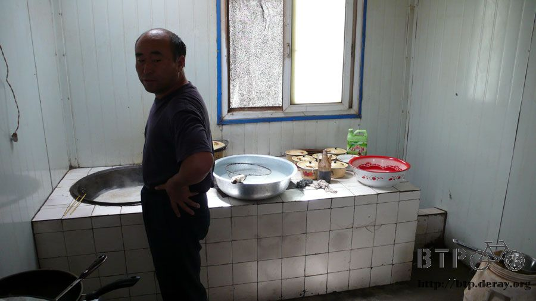
我的午餐就是用大盤子裝的醬羊肉拉麵，和很多甜甜的青菜梗，免費，很好吃！

吃過午餐已經下午兩點多，還有一百公里等著我，趁著大家都在午休的時候，滿懷謝意的離開這個工寮，謝謝你們大家的幫忙，謝謝。
這一路上都是沙漠，但是沿路都飛舞著一種昆蟲，蜜蜂。
相當的不可思議，又沒有養蜂人，也沒有蜂窩，更沒有花朵，哪來這麼多蜜蜂呢？
一開始不以為意，只覺得很神奇，但是在爬一個陡坡的時候，騎的速度比較慢，蜜蜂開始像我圍繞過來。
不停的撞擊在我的頭上，在耳朵旁嗡嗡嗡的盤旋，停在我的手上、衣服上和臉上。
一開始我都是用轉動頭部的方式將牠們從我的臉上趕走，後來我有點被激怒了，就用手在頭的四周揮舞，
結果一點效果也沒有，蜜蜂們反而更加的猖狂，我覺得事情有點不太妙，就脫下帽子，更大面積的揮舞趕走這些蜜蜂，
所帶來的只是更糟糕的反效果，蜜蜂們也被我激怒了，開始攻擊我，朝我露出皮膚的部分螫過來，
幸虧我帶著太陽眼鏡和口罩，但是因為頭巾是花色的，就成了牠們攻擊的目標。
在我頭巾和太陽眼鏡的部分露出一點額頭，竟然被蜜蜂無情的螫咬。
數隻蜜蜂就這麼螫在我的額頭上，超級無敵痛的，而且居然螫完了之後，就整隻連刺留在額頭上，我還得忍著痛把牠拔起來。
被螫到第一下的時候，原本不妙的想法成真了，我在荒郊野外被不知從何而來的蜜蜂攻擊了！
帽子揮舞的太大力，連太陽眼鏡都給拍掉在地上，掉頭回去撿的時候，又被另一隻蜜蜂給狠狠的螫了一下。
不知道蜜蜂有沒有毒性？一個人可以耐的住被幾隻蜜蜂螫咬？
蜜蜂的數量太多，揮舞帽子只帶來反效果，我忍痛將頭巾拉低完全蓋住額頭，帽子戴回頭上保護頭部。
逆向騎乘在對面的車道，那邊的蜜蜂比較少，很想加速逃離這個地方，但是被困在上坡，怎麼騎也騎不快。
奮力踩著踏板，恐懼的腎上腺素給我力量，翻過上坡就是下坡，同時藉由大卡車疾速駛過的風壓，總算驅散了這群瘋狂的蜜蜂。
本來看來無害的蜜蜂，居然無情的攻擊我，虧我這一路上還跟你們聊天示好，同時小心不要壓到在地上散步的蜜蜂，
你們居然這樣對我？蜜蜂群散開之後，停下車在額頭被螫的地方，塗上了厚厚一層的小護士，中和一下毒性。
接著就一直騎在對向車道，看著對面馬路的蜜蜂在盤旋，看我什麼時候會騎回去再給他們螫咬。
等我檢查自己額頭的傷勢，發現有一點紫紅色的小包，有點痛但不礙事，胡亂拍打中，居然有一根蜜蜂的刺還留在額頭上。

隨後蜜蜂比較少了，我才又回到自己該走的車道去，不然騎在對向車道，那大卡車疾駛而過的風壓，
簡直要把我從馬路上推到沙漠裡一樣，我像隻無助的小蟲，被空氣做成的巨大蒼蠅拍狠狠的拍扁。
下午五點左右到達駱駝圈子，又回到了有人出現的地方，恭喜我又騎完了一百五十公里的戈壁灘，還算平安？
這邊看起來也就是個卡車司機中繼站的味道，找一間小販買一瓶可樂、兩根冰棒，慶祝我歷劫歸來。

我問小販兩個問題：
『這邊為什麼叫駱駝圈子呀？』
因為連一隻駱駝都沒有，叫卡車圈子還比較合適。
老闆娘說相傳以前這邊有駱駝商隊，但已經是很久以前的事情了，這裡從她出生就叫這名字，看起來也就是這個樣子了。
『這一路上那麼多蜜蜂是怎麼回事呀？』
老闆娘笑著說我被螫到了是嗎？我比了三根手指頭，表示我的慘況。
她說沒事，被螫的時候很痛，但過兩天就好了，他們在這邊常被螫，習慣就好了。
這蜜蜂是因為養蜂人開著卡車要運送，結果因為超高，常常被警察攔下來不給上國道。
在路旁一等就是一整天，晚上才給走，所以蜜蜂就滿天的在這邊飛舞，以及沿路上都有笨蛋蜜蜂從蜂窩裡飛出來，
結果跟不上卡車的速度，就被沿路遺留在312國道，成了有家歸不得的蜜蜂。
殘酷一點的說，牠們除了在路邊飛來飛去偶爾螫一下我這樣的可憐人之外，就只能等著死在沙漠裡了。
雖然剛剛才種下深仇大恨，但現在則有點同情這些被遺忘的蜜蜂，安息吧。
從駱駝圈子往哈密還有將近六十公里，估計抵達時間是晚上九點，懶一點的話也可以就這麼住在駱駝圈子。
只是都騎了一百五十公里了，還差最後這短短的六十公里嗎？
多虧可樂和冰棒的加持，讓我精神為之一振，傍晚太陽漸漸下山之後，狂風又會逐漸減弱，
低矮處的雲層很厚，所以西曬的太陽變的沒有威脅性，脫下口罩和帽子，往哈密騎去。

在這樣有點孤寂的氣氛下，我想了很多自己從小到大所遇到的人、所發生的事情。
回憶清晰的令人恐懼，當時的味道、當下的話語都一一浮現，好像在做人死之前一生會從眼前閃過那樣的回顧。
覺得自己此時此刻能夠在這個地方旅行，是一件很不可思議的事情，要和多少的人在生命中有過交叉的軌跡，才能造就今天的我？
九點的時候離哈密市區還有最後的五公里，但是整條路被挖的像是二戰的戰壕。

我不想住在郊區，所以或牽或騎的走完最後的五公里路，喧鬧的市區就在眼前展開了。
十幾公尺寬的人行道擺滿了桌椅，幾百個人在這吃著烤肉、砂鍋喝著啤酒享受人生。
我當下決定要住在離這裡越近越好的地方，連續幾個晚上也來好好的享受人生。
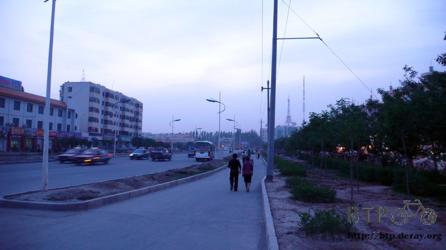
在街角找到一間旅社，正要開口大喊有沒有人呀？老闆已經站在外頭了，他們一家正好要出去吃飯。
再晚個一分鐘到這裡，就沒人可以處理我的住宿問題了，真是好加在。
哈密可以休息幾天，看情況而定，先住兩晚上，房價是二十元。

單人間通常都很小，但是不論多小的房間，我都會堅持要把小多也放進來房裡。
『不看著單車我晚上睡不著。』如果老闆問的話，我都是這樣回答。
舒服的擦洗過之後，晚餐正在鬧街上等著我，今天很努力的騎到了哈密，值得嘉許，來大快朵頤吧。
找一間看起來很好吃的烤肉店，點了烤羊肉串、烤羊排、烤餅和一瓶冰的青島啤酒。

晚餐享受著美食，總是一天最開心的時候，這代表著一天的辛勞結束了，多虧那些蜜蜂，這又是個不枉此生的一天。
繼續閱讀：6.2 哈密‧瓜
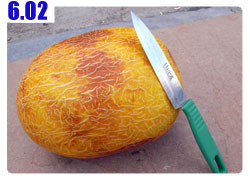
中國-人民幣－ 1：4.3 台幣
6.1 |
總計：44元 |
可樂3元、冰棒兩支1元、晚餐烤羊肉串5元、烤羊排10元、烤餅1元、青島啤酒4元、住店20元 |
|